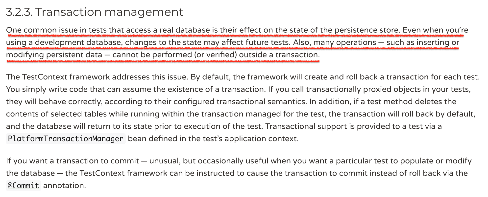

在测试运行时，测试类中 @Transactional 注解，会导致测试中 Entity 数据的操作都是在内存中完成，最终并不会进行 commit 操作，也就是不会将 Entity 数据进行持久化操作，从而导致测试的行为和真实应用的行为不一致。
事务管理在应用开发中是种不可或缺的设计，它是数据库持久化处理的一种标准。我们知道，应用程序开发离不开对数据的CRUD（增删改查），事务的ACID性可以更好保证数据的完整性，保证相关数据的同生共死。单个事务生命周期主要分为三个阶段，BEGIN TRANSACTION -> COMMIT TRANSACTION -> ROLLBACK TRANSACTION。
Spring Boot事务的使用分为命令式和声明式常用的方式是声明式注解（@Transactional）。事务管理既可以在应用层使用，也可以在测试中使用。
为了保证测试之间的相互独立，测试之间数据不会被相互影响。也许你写过这样的测试：
1 |
|
@Transactional 通过将数据持久化操作截断，来解决测试之间相互对立，数据相互不影响的问题。然而这样方式会有副作用，就是数据持久化的过程不再真实，没有了commit的过程。从而会导致：
- 无法保证
Entity之间关联关系，唯一索引和主外键关联的准确性- 无法保证
Entity创建时间、更新时间和版本化(乐观锁)的赋值逻辑的准确性- 无法保证
Entity中有@Transient注解的属性的赋值逻辑的准确性- 测试的数据不是真实场景存在的问题
- 测试中，单个事务中的准备数据，无法在多线程中共享。
……
然后 Spring 在测试问题域中引入事务管理初衷是什么？为了解决什么问题才需要将它引入？官方文档介绍 Transaction management

按照官方文档意思，为了解决测试运行时，程序访问真实的数据库，改变数据的状态，从而影响到后续的测试问题。
其实这里应该批判性思维一下，为什么测试运行时，需要访问真实的数据库？为什么测试之间的数据会相互影响？
对于每个测试来说，每次运行前都应该有干净的上下文，或者说独立的上下文，有数据清理和准备的过程，测试与测试之间相互隔离。也就是说，为什么测试不能用内存数据库或者嵌入式数据库？为什么不是每个测试运行前清理一下数据库中的数据，保证测试用例运行前的一方净土，不被上个测试数据影响？
答案当然是，可以！！！
写在最后
如何做？实现一个 TruncateDatabaseService，只删除表的数据，不删除表的结果。 在测试基类的@BeforeEach，执行 truncate。源码Truncate Database：
TruncateDatabaseBasicOnHibernateService
TruncateDatabaseBasicOnMybatisService